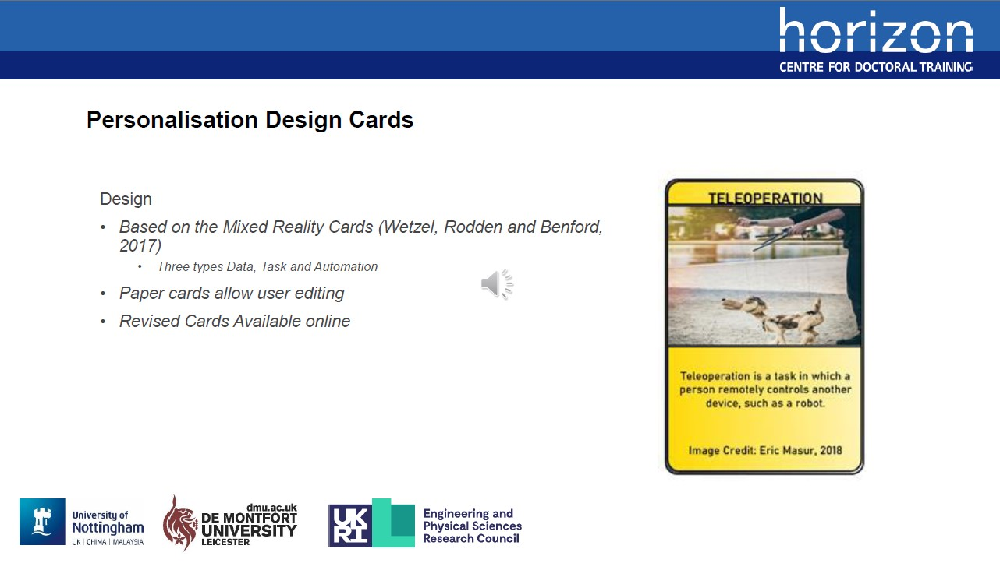
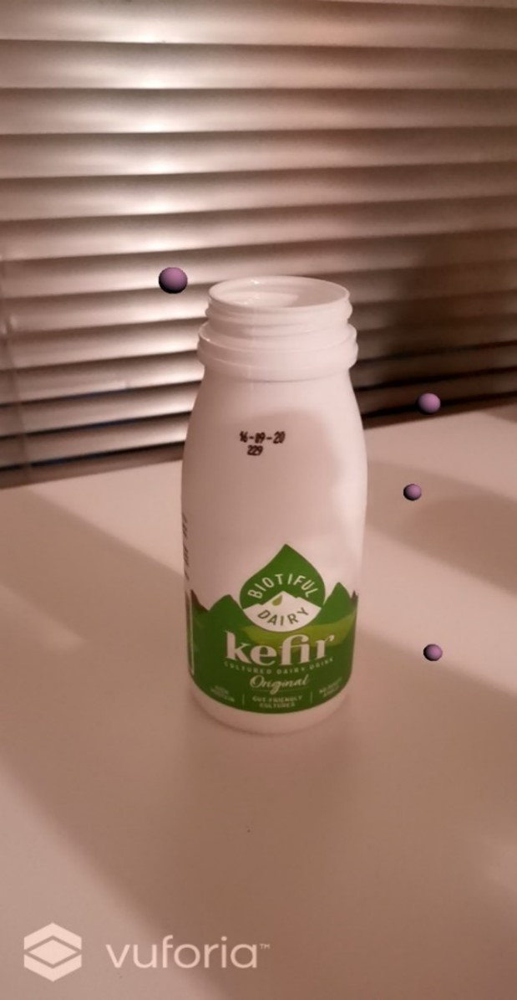
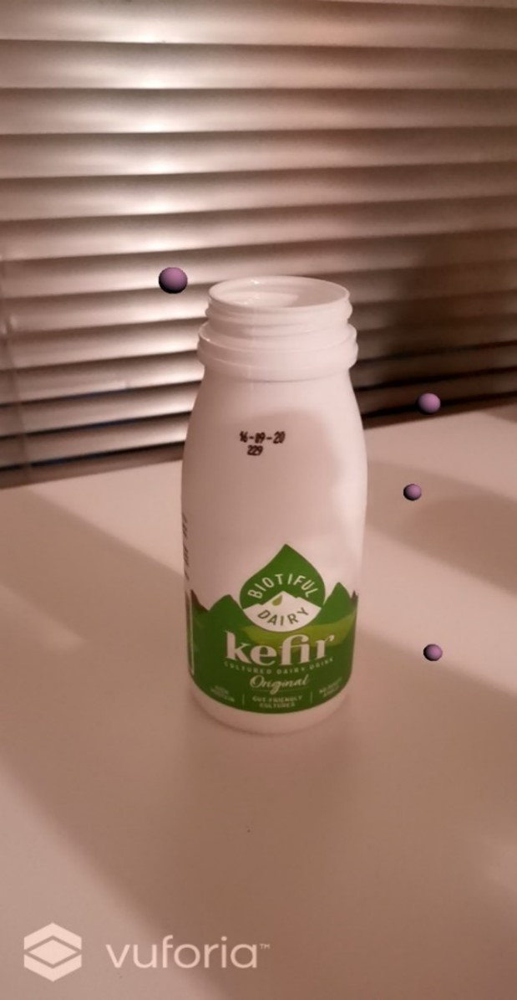
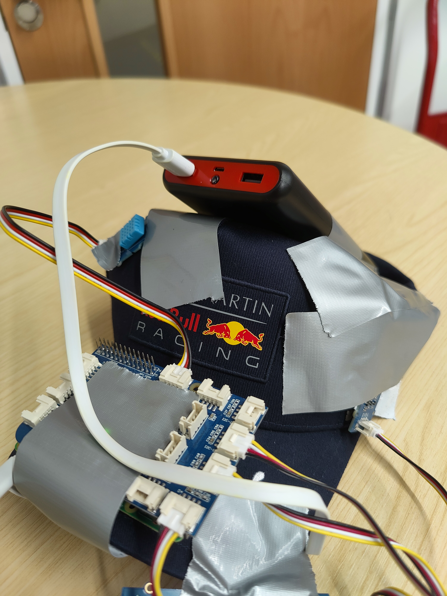
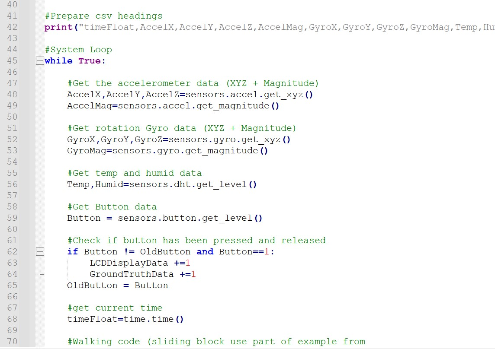
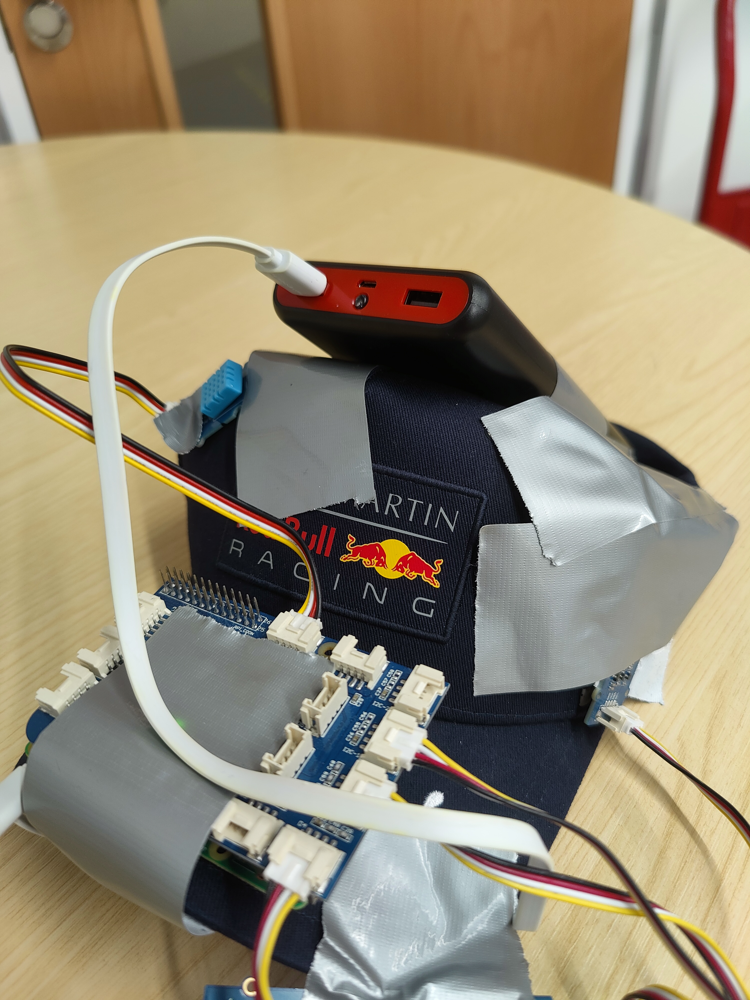
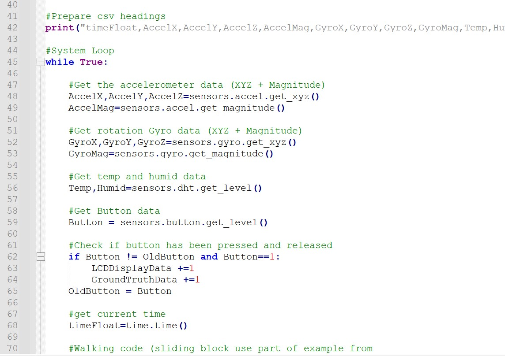

AHFE 2024 Conference Paper
The AHFE 2024 conference was the host of the paper: Understanding User Needs of Personalisation-based Automated Systems with Development and Application of Novel Ideation Cards.
This paper consisted of the generation of a novel set of ideation cards and getting participants involved with using them to codesign their own personalisation systems.
My role was in the work was the designer of the cards, qualitative data collention/analysis and main writer of the paper. Available at: AFHE Open Access

Augmented Reality Smartphone App
This work looked to promote consumer involvement through discussions around waste using AR technology. Suggesting research questions around the effectiveness of AR for providing information on the circular economy, the ability for AR to produce discussion into waste and if the discussion spurred and if the discussion caused any changing consumer actions.
An Augmented Reality smartphone technology probe was selected as the method. The technology probe itself was designed through the use of User Persona and Scenario Techniques, with an iterative design approach. It was implemented using the Unity game engine (C++) and Vuforia AR package as a foundation.
Interview techniques were utilised as the method at which to evaluate the technology probe, analysed using a thematic analysis. Participants (N=6) were invited to use the technology probe, as they would real application to scan example products.
 


Sensor-based Hat
The project is an inactivity monitor and alarm system. It tracks user movement and provides a visual alarm when they have been inactive for too long. It does this by combining different sensor data to determine whether a user is walking and whether they have changed room, these link to show whether a user is outside.
The system was tested and developed in multiple ways by collecting real-world data sets. The system is mainly interacted by a person through the sensors in the system. Once the system has been started, the user is constantly interacting with the system.
In the simplest form, a user’s non-activity is registered within the system and starts/continues a non-activity timer. This timer counts up until a pre-set minute count is reached, upon which it plays an alarm noting the user that they have been inactive for a period of time.
This was completed as part of a COMP4104 module, at the University of Nottingham. I added to the code provided (Python) to "read" the sensor data and have the system respond to real-world events(RaspberryPi/GrovePi).
 


